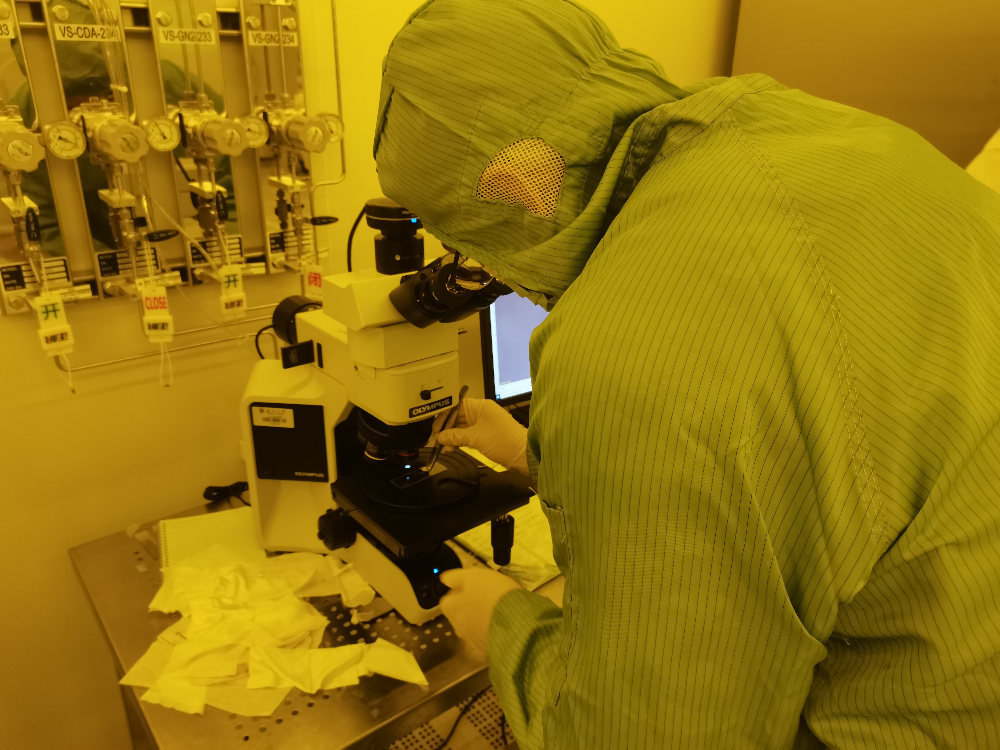
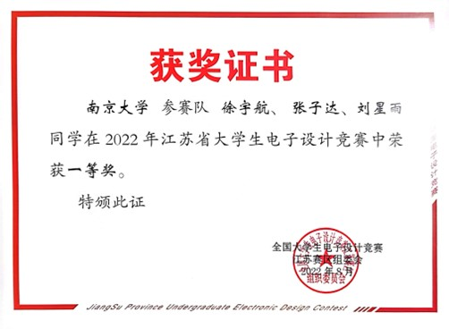
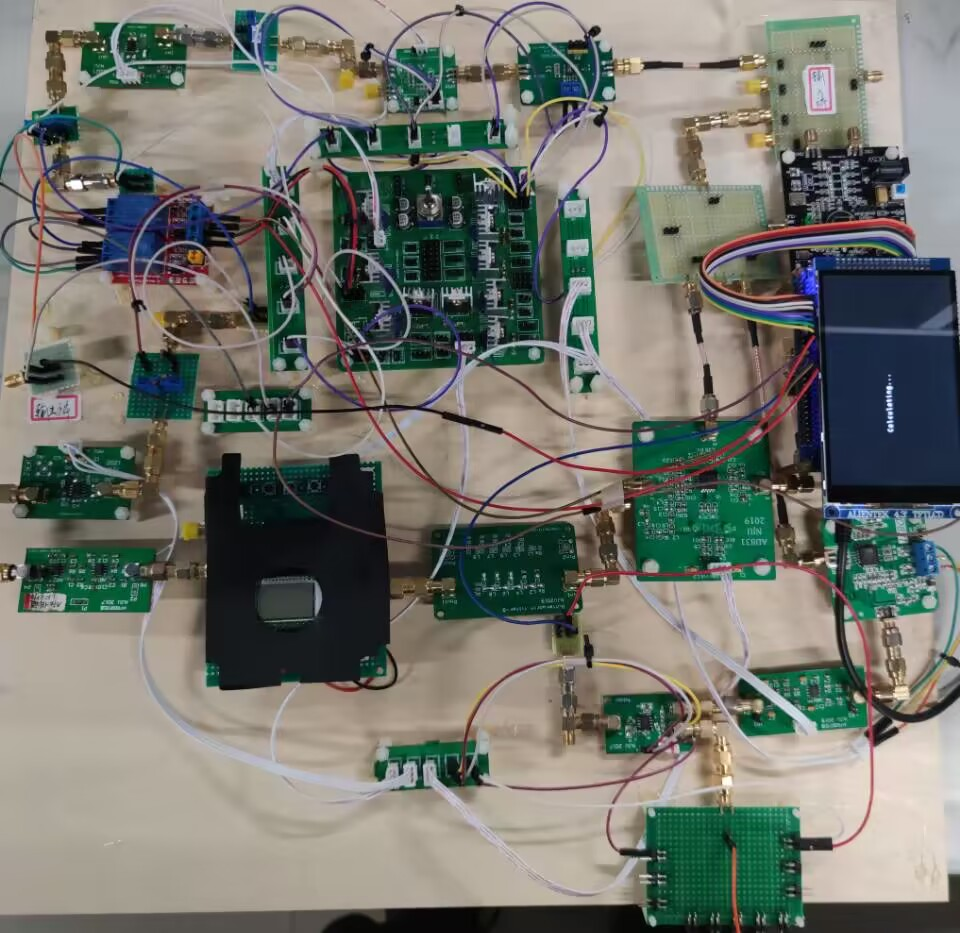
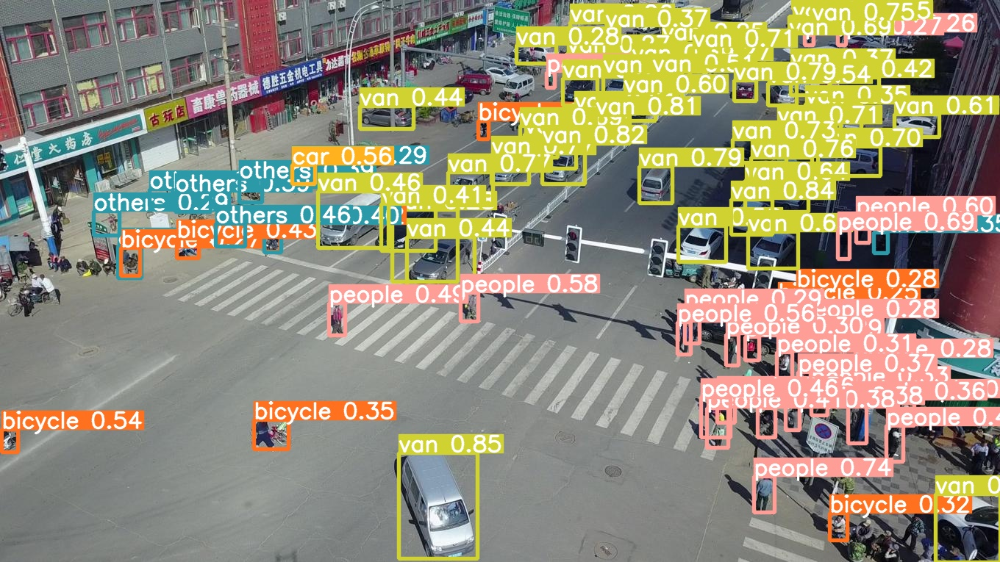
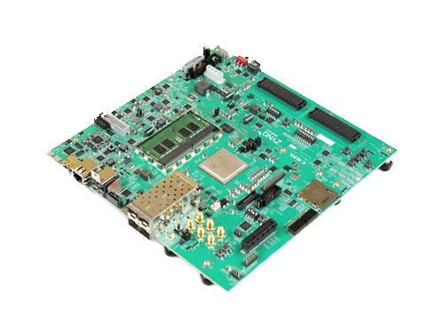
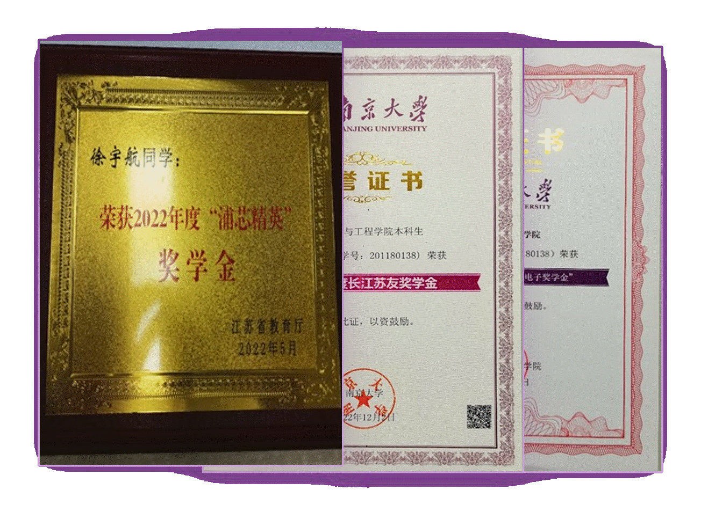
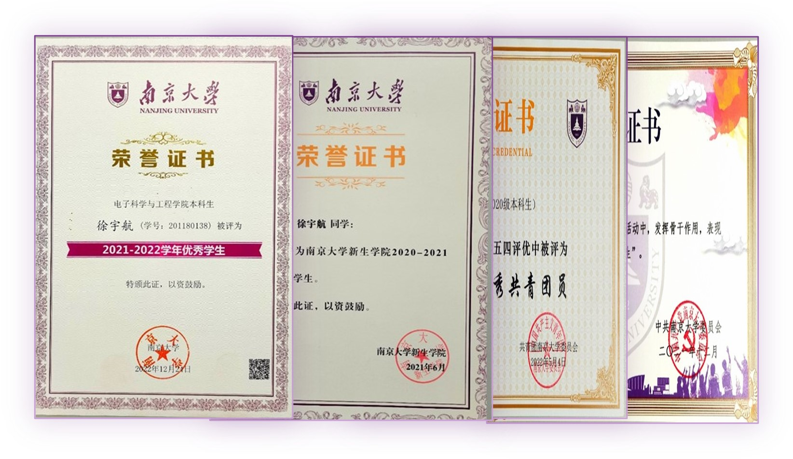
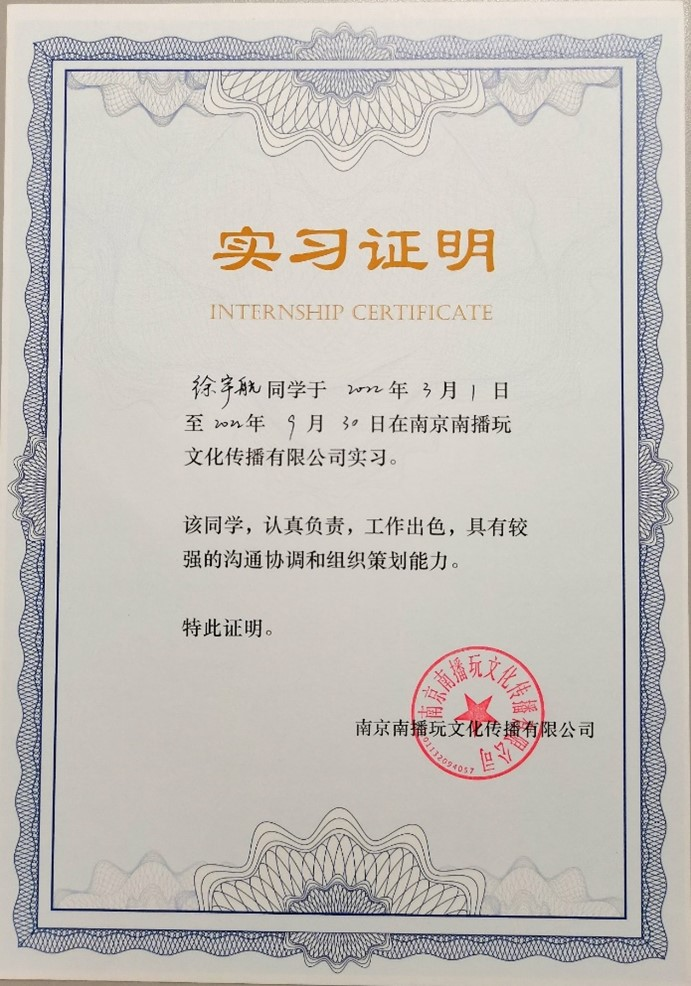

Yuhang Xu 徐宇航
E-mal: yuhangxu0328@163.com
Phone: +86 15098128859
Address: Nanjing, Jiangsu Province
E-mal: yuhangxu0328@163.com
Phone: +86 15098128859
Address: Nanjing, Jiangsu Province
School of Electronic Science and Engineering
GPA: 4.5/5.0 Professional Ranking:4/39

English level: CET-4:658 CET-6:546 TOFEL iBT:93
· Research content: We summarized and refined the complete preparation process of micro-LED; took the experimental certificate of microelectronics processing center, and finished the preparation of micro-LED display module and the setting of FPGA driver circuit by grinding and polishing, cutting, PECVD, lithography, ICP, RIE and other processes of a complete wafer.
· Research achievement: apply for an invention patent: the method of preparing high-resolution nano-image element display array by using flexible nano-dwelling film; meanwhile, participate in the 2022 National Internet+ Competition based on this project and win the national gold medal.



 
Research content: The research explores a comprehensive AI inference development platform developed by Ceres: Vitis-AI, which includes a rich set of AI models, optimized deep learning processor unit (DPU) kernels, tools, libraries, and AI designs on the edge and data center side. Initial exploration, literature and operation manual reading, and training of the yolov5 weak target detection model are currently underway. Subsequently, it will be deployed to the Celeris board and connected to the camera to actually test the training effect.
 
2022 TI Cup Jiangsu Province Electronic Design Competition (Captain) First Prize
The 8th China International "Internet+" Student Innovation and Entrepreneurship Competition Industry Track National Gold Award
The first prize of the micro display competition of Nanjing University "Painting a century with ink, Nanyong starts a new journey"
2022 "Pulsar Elite" Scholarship
2022Chang Jiangsuyou Scholarship
2020 Nanjing University "Jin Xiao Electronic Scholarship"
2021 People's Scholarship Award for Science and Technology Innovation
2022 People's Scholarship Subject Competition Award
Outstanding students for the academic year 2021-2022
2020-2021 Nanjing University Freshman College Outstanding Students
2022 Outstanding Youth League Member of Nanjing University
2021 Nanjing University Social Practice Outstanding Students
 
· Responsible for organizing the weekly meetings of the video center, completing the minutes of the meetings, writing part of the video shooting plan, and completing the shooting and editing of some videos.

· Responsible for the editing and management of the public tweets of the E Creative Society and the Nanjing University Electronic Laboratory Center.
· Responsible for organizing various innovative practical activities, lectures and presentations within the School of Electronic Science and Engineering.
· Languages: Chinese (native), English (good)
· EE Skills: Proficiency in MS Excel, Word, etc. Good at using software such as PS and PR. Very familiar with programming language such as C, Python and MATLAB